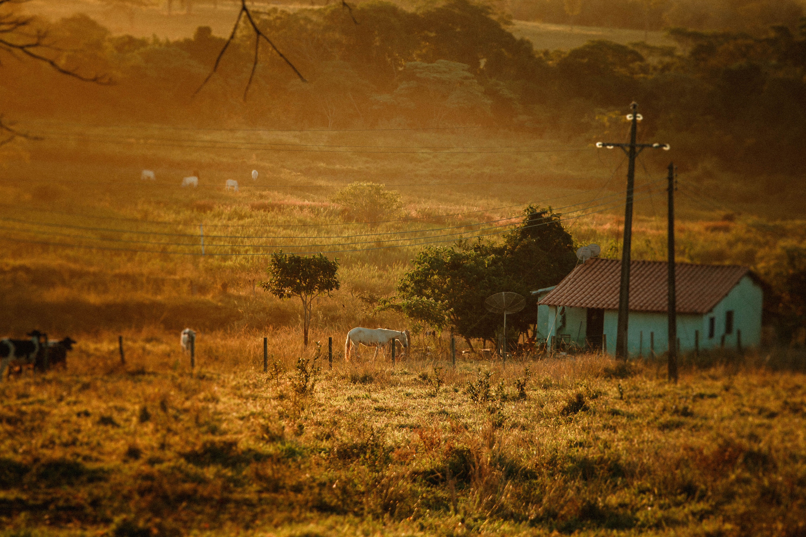
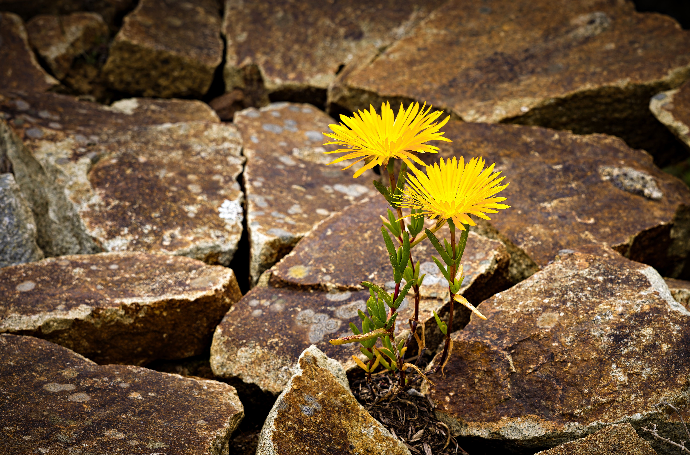

Missão
Transformar linhas de código em experiências digitais intuitivas, acessíveis e impactantes, conectando pessoas e ideias através da tecnologia, sem nunca perder de vista a simplicidade e a essência do que é humano.
Transformar linhas de código em experiências digitais intuitivas, acessíveis e impactantes, conectando pessoas e ideias através da tecnologia, sem nunca perder de vista a simplicidade e a essência do que é humano.

Ser uma desenvolvedora de excelência no ecossistema web, utilizando a flexibilidade da tecnologia para provar que a inovação não tem fronteiras geográficas, permitindo o desenvolvimento profissional de alto nível em perfeita harmonia com as minhas raízes e a sustentabilidade.

Autenticidade e Raízes: Valorizo de onde vim e trago a resiliência, a simplicidade e o respeito à natureza do interior para o meu ambiente de trabalho e para o código que escrevo.
Evolução Contínua: Paixão por aprender. Busco consolidar bases sólidas (HTML, CSS, JS) para construir o futuro da minha carreira com consistência (React).
Adaptabilidade: Pronta para abraçar desafios no modelo presencial, híbrido ou remoto, entendendo que cada etapa é fundamental para o meu crescimento profissional.
Propósito Humano: Criar interfaces e sistemas que façam sentido para quem os utiliza, unindo o fascinante mundo tecnológico à vida real de forma fluida.